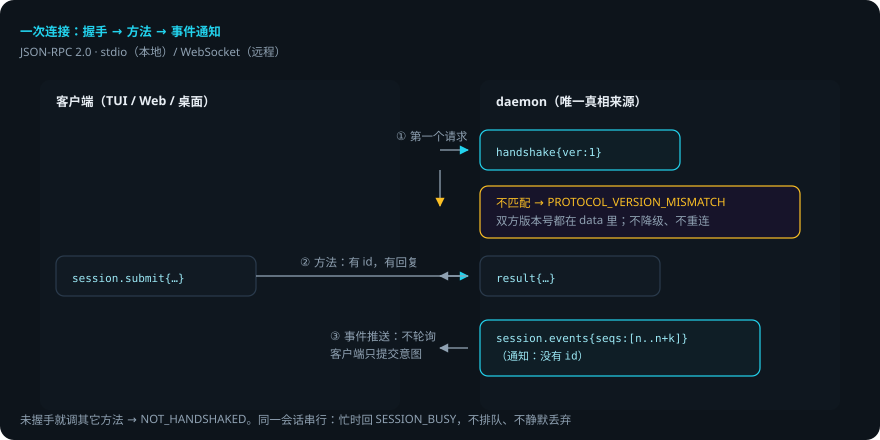
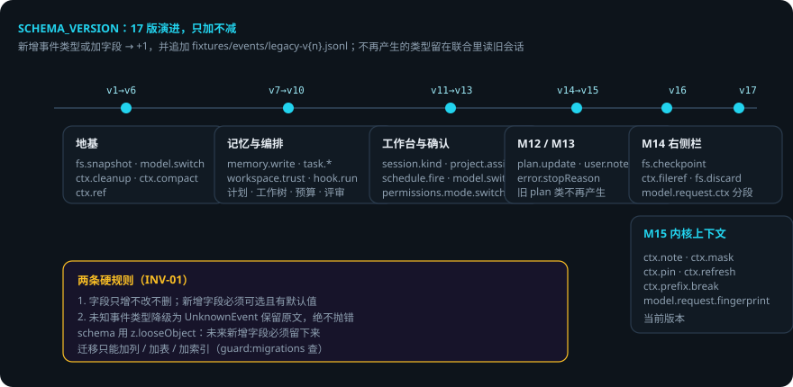
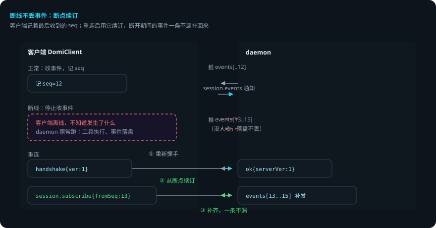

DOMI · DOCS
Domi Protocol：daemon 与客户端之间的契约
本页回答四个问题：daemon 和客户端怎么通信？事件流怎么演进而不破坏旧数据？断线了会怎样？改协议要过哪些关？ 逐字段参考在
docs/protocol.md（由脚本生成，勿手改）。本页讲约定、全景与演进规则。 贯穿例子：给登录接口加限流——客户端（TUI / Web / 桌面端）在全程监听这个会话的事件。
先说结论
- 传输是 JSON-RPC 2.0：stdio（本地单二进制）或 WebSocket（远程）。
- 握手必须是第一个请求。版本不匹配直接拒绝，不降级、不重连。
- daemon 是事件流的唯一写入者。客户端只提交意图；同一会话串行，忙时回
SESSION_BUSY。 - 事件推送是通知（没有 id），客户端不轮询。断线靠
session.subscribe的fromSeq断点续订。 - 事件 schema 只增不改不删（
SCHEMA_VERSION17）。未知事件降级为UnknownEvent，历史永远可解析。 - 改协议有 CI 门：
guard:protocol/guard:api/guard:append-only/guard:migrations。
用到的词
| 词 | 意思 |
|---|---|
| 握手 | 连接后的第一个请求，交换版本号。 |
| 通知 | 没有 id 的 JSON-RPC 消息，不期待回复。 |
| 方法 | 客户端调 daemon 的请求（如 session.submit）。 |
| 事件 | daemon 产生的流式记录（如 model.delta）。 |
| 断点续订 | 重连后从上次的 seq 继续订阅，不丢事件。 |
| 投影 | 从事件流算出来的视图（上下文、轨迹、状态栏）。 |
1. 传输与约定

- 客户端连接，先发
handshake。 - 版本匹配：继续。不匹配：返回
PROTOCOL_VERSION_MISMATCH，双方版本号都在 data 里。不降级、不重连。 - 客户端调方法（如
session.submit），daemon 处理并回结果。 - daemon 产生的事件作为通知推给所有订阅了该会话的客户端。
未握手就调其它方法，返回 NOT_HANDSHAKED。daemon 的报错带 messageKey + params，端上按自己的语言渲染（i18n）。
2. 方法全景
客户端能调什么，由 METHODS（packages/protocol/src/rpc.ts）定义。按用途分组：
| 组 | 方法（示例） |
|---|---|
| 会话 | session.list session.create session.submit session.note session.interrupt session.subscribe session.history session.compact session.branch session.switchModel session.budget |
| 记忆 | memory.list memory.search memory.delete memory.extract |
| Soul | soul.get soul.write soul.export soul.import soul.review |
| 任务 / 评审 | task.start task.list task.retry task.cancel review.start |
| 插件 / 项目 / 定时 | plugin.list plugin.ui · project.list project.create project.archive · schedule.create schedule.runs schedule.preview |
| 配置 / 模型 | config.get config.set provider.vendors model.list skill.list |
| 工作树 | worktree.diff worktree.discard worktree.restore worktree.apply |
| 其它 | usage.summary fs.list attachment.put audit.record |
3. 事件全景
daemon 主动推的事件（DomiEventSchema）。订阅后一次一批、seq 连续：
| 组 | 事件 |
|---|---|
| 用户侧 | user.input（轮边界） user.note（运行中补充） |
| 模型侧 | model.request model.delta model.reason model.usage model.switch |
| 工具侧 | tool.call tool.result fs.snapshot fs.checkpoint permission |
| 上下文 | ctx.cleanup ctx.compact ctx.ref ctx.note ctx.mask ctx.pin ctx.refresh ctx.prefix.break |
| 记忆 / 任务 / 计划 | memory.write · task.spawn task.run task.end · plan.update |
| 其它 | snapshot revert hook.run verify.required budget.warn schedule.fire review.findings plugin.error error |
两条硬规则（event.ts 文件头）：
- 字段只增不改不删；新增字段必须可选且有默认值。
- 未知事件类型降级为
UnknownEvent保留原文，绝不抛错——历史永远可解析。
schema 用 z.looseObject：已知类型遇到未来新增字段时字段必须留下来，否则 payload 还在磁盘上、内存里却没了。
4. 事件流怎么演进

两套版本号，职责分开：
| 版本号 | 管什么 | 什么时候升 |
|---|---|---|
PROTOCOL_VERSION（=1） |
RPC 面 | 加方法 / 通知不用升；不兼容改动才升，且不降级兼容 |
SCHEMA_VERSION（=17） |
事件面 | 新增事件类型或加字段 +1，并追加一份 fixtures/events/legacy-v{n}.jsonl |
事件面几个关键节点：
- v1→v6 地基：
fs.snapshot、model.switch、ctx.compact、ctx.ref。 - v7→v10 记忆与编排：
memory.write、task.*、工作树、预算、评审。 - v11→v13 工作台：
session.kind、schedule.fire、permissions.mode.switch。 - v14→v15（M12/M13）：
plan.update、user.note。 - v16（M14 右侧栏）：
fs.checkpoint、ctx.fileref、fs.discard。 - v17（M15 内核上下文）：
ctx.note、ctx.mask、ctx.pin、ctx.refresh、ctx.prefix.break。
不再产生的事件类型留在联合里（读旧会话用），不删。迁移只能加列 / 加表 / 加索引（guard:migrations 查）。
5. 客户端怎么保证不丢事件
三端（TUI / Web / 桌面）共用 DomiClient：
- 握手：版本不匹配停在
incompatible，不重连、不降级——重连只会一遍遍撞同一堵墙。 - 断线重连 + 断点续订：每个会话记着最后收到的 seq，重连后用
fromSeq续订，断开期间的事件一条不漏补回来。 - 去重：同一个 seq 只进一次 store——投影是追加式的，重复一次就是重复一条消息。

客户端必须能在浏览器里跑：不 import 任何 node 模块，不依赖 DOM 类型，连接用最小的 WireSocket 描述（浏览器 WebSocket 与 Bun WebSocket 的公共子集）。
6. 出错了怎么办：限流第 2 步做到一半，客户端断线
还是「给登录接口加限流」。第 2 步写限流中间件进行中，你的终端断网了。
- 断线。客户端停在最后收到的 seq。daemon 继续跑：工具执行、事件落盘都不受影响。
- 重连。客户端重新握手，成功后用
fromSeq续订。断线期间 domi 写过的所有事件（tool.result、model.delta、permission……）一次性补回来。 - 版本不匹配（daemon 升级了，客户端是旧的）。握手返回
PROTOCOL_VERSION_MISMATCH，客户端停在incompatible。升级客户端即可。 - 会话忙（另一个请求正在处理这个会话）。返回
SESSION_BUSY。不排队、不静默丢弃——客户端看到明确错误，稍后再试。 - 未知事件（daemon 更新了事件类型，旧客户端不认识）。降级为
UnknownEvent保留原文，不抛错。
一张表看全部情况
| 情况 | domi 做什么 | 你要做什么 |
|---|---|---|
| 断线 | 记最后 seq，重连后 fromSeq 续订补事件 |
不用管 |
| 版本不匹配 | 握手拒绝，客户端停 incompatible | 升级客户端（或回退 daemon） |
| 会话忙 | 回 SESSION_BUSY，不排队 | 稍后再试 |
| 旧客户端遇新事件 | 降级 UnknownEvent，不抛错 | 不用管（升级后能看到完整） |
| 你改协议 | guard:protocol 等四个守卫把关 | 升版本 + 补 fixture + 重新生成文档 |
7. 改协议的完整流程
- 改
rpc.ts（方法）或event.ts（事件）。事件变更按版本规则升SCHEMA_VERSION并补 fixture。 bun run scripts/gen-protocol-docs.ts重新生成docs/protocol.md/docs/protocol.schema.json；bun run scripts/gen-api-snapshot.ts重新生成.api.md。- 跑
pnpm guard：guard:protocol/guard:api/guard:append-only/guard:migrations都会查。 - 在
docs/tasks/M*.md里登记（协议改动须有 PRD 引用）。
8. 可靠性靠什么
- 只增不改。字段加、类型留、迁移只加列——旧数据永远可读。
- 未知即降级。新事件在旧客户端里不炸，历史永远可解析。
- 断点续订。断线不丢事件，重连一次补齐。
- 错误码可见。
SESSION_BUSY比-32001省一次查表——错误码最终会出现在终端里和 issue 里。 - 版本门禁。不兼容改动被守卫挡住，漏改一个 fixture 都红。
已知限制
- 不降级兼容：老客户端必须升级才能连新版 daemon。
- 会话串行：同一会话同时只处理一个请求，并发场景要排队。
SCHEMA_VERSION升了就要补 fixture，改一次事件面至少要动四个文件。- 客户端投影是追加式的：重复推送会让投影错乱，去重靠 seq 纪律。
代码在哪里
| 主题 | 位置 |
|---|---|
| 方法 / 错误码 / 握手 | packages/protocol/src/rpc.ts |
| 事件 schema 与版本 | packages/protocol/src/event.ts |
| 客户端（握手 / 续订 / 去重） | packages/client-core/src/client.ts |
| 生成协议文档 | scripts/gen-protocol-docs.ts |
| 历史事件 fixture | fixtures/events/legacy-v*.jsonl |
相关
- 事件流怎么被消费：Agent Loop：一轮里发生了什么。
- 断线重连后 UI 怎么投影：轨迹与回放。
- 会话怎么存储：会话存储。